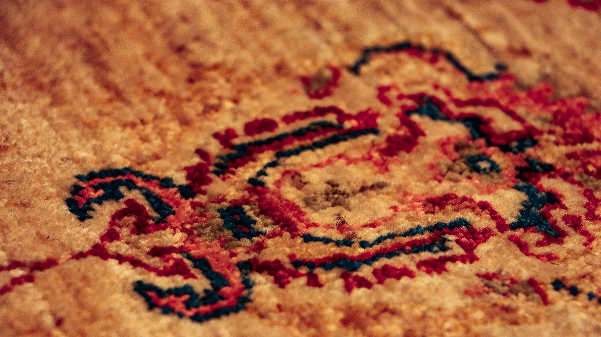

Masterful Transformations
Drag the gold center handle of any slider to inspect the pristine, deep-pile restoration executed in our workshop.
19th Century Tabriz Heirloom
Condition: Severe fringe erosion, edge fraying, and decades of compacted atmospheric soot that completely dulled the medallion's original madder red dyes.
Restoration: Meticulous dry dusting, organic submersive hand-wash, and securing unraveling warp cords with hand-knotted fringe stitching.



Imperial Kashan Pure Silk
Condition: Deep pet urine acid bleeding across indigo border accents and severe pile fuzzing due to heavy foot traffic on delicate silk fibers.
Restoration: Selective enzyme dye stabilization, delicate hand-blotting bath, and micro-trimming fuzzy fibers to restore velvet smoothness.
Vintage Geometric Heriz
Condition: Organic red wine spills across the central ivory fields and a 4-inch diagonal border tear from furniture friction.
Restoration: Artisan stain neutralization bath and meticulous re-warping and re-knotting of cotton foundation threads.